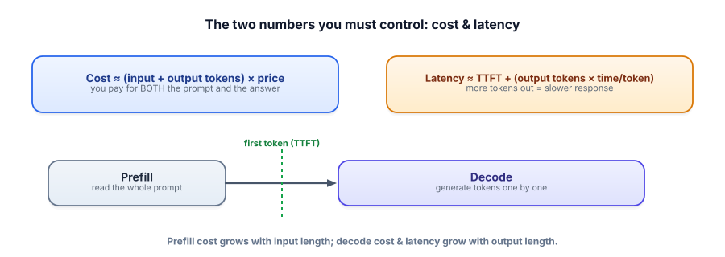

The cost & latency model
Every call to a language model costs two things: money and time.
Both are counted in tokens, the small chunks of text the model reads and writes.
You pay for the tokens you send in and the tokens that come back, and output tokens cost more each.
Time has two parts: reading your whole prompt (prefill), then writing the answer one token at a time (decode).
If you can count the tokens, you can predict the bill and the wait before you launch.
Think of a taxi meter. You pay a small fee for every kilometre you sit in the car on the way there (input tokens) and a bigger fee for every kilometre on the way back (output tokens), and the ride home is slow because the driver can only go one street at a time. A long address to read out makes the driver start late; a long ride home makes the whole trip long and pricey.
| In the picture | In the real system |
|---|---|
| Kilometres on the way there | Input tokens: your prompt, priced per million |
| The pricier kilometres on the way back | Output tokens: often several times the input price (Sonnet 5.5: $2 in, $10 out) |
| Reading out a long address before the driver sets off | Prefill: the model reads the whole prompt; this sets the time to first token (TTFT) |
| Driving home one street at a time | Decode: one token per step, so a long answer means a long wait |
Where the picture breaks. A real taxi charges the same rate both ways, while an LLM's output rate is usually several times the input rate.
Going deeper
A feature that works in a demo can be unaffordable or unbearably slow at scale. To ship for real, you need a mental model of where the dollars and the milliseconds actually go. Both come down to one thing you already understand: tokens.
Cost and latency are both about tokens
Every LLM call has two costs that matter in production: money and time. Both are driven by tokens (Track 1.2). You pay for the tokens going in (your prompt) and the tokens coming out (the answer) — often at different prices. And the response takes time proportional to how many tokens it must read and generate. Model these two numbers and you can predict, budget, and optimize; ignore them and you’ll be surprised by the bill and the lag.

Providers price per token, usually with input tokens cheaper than output tokens. Latency splits into prefill (the model reads your whole prompt — this sets the time to first token, TTFT) and decode (it generates the answer one token at a time — this scales with output length). So a long prompt mainly raises TTFT and input cost; a long answer raises both decode latency and output cost. Output tokens are the expensive ones, on both axes.
Estimate your bill
Set the tokens, prices (use your provider’s — they vary), and traffic. Watch how output tokens and request volume drive the monthly cost.
Cost calculator
Estimate cost from token counts using free tiktoken — do this before launch, not after the invoice.
import tiktoken
enc = tiktoken.get_encoding("cl100k_base")
prompt = system_prompt + retrieved_context + user_question
in_tokens = len(enc.encode(prompt))
out_tokens = 350 # estimate or cap your answer length
PRICE_IN, PRICE_OUT = 0.50, 1.50 # $ per 1M tokens (use YOUR provider's)
cost = (in_tokens * PRICE_IN + out_tokens * PRICE_OUT) / 1_000_000
print(f"~${cost:.5f} per request, ~${cost*20000*30:.0f}/month at 20k/day")This five-line estimate is the single most useful habit in serving: it turns “is this affordable?” from a post-launch panic into a pre-launch number you can design against.
Assumptions (ours, not a vendor's): 400,000 requests a day, 3,000 input tokens each (system prompt + retrieved help articles + question), 300 output tokens. Prices are the published Claude list prices on 2026-11-03 (Anthropic models overview).
- Per request on claude-sonnet-5-5 ($2 in / $10 out per million). Input: 3,000 x $2 / 1,000,000 = $0.006. Output: 300 x $10 / 1,000,000 = $0.003. Total $0.009.
- Per month. $0.009 x 400,000 x 30 = $108,000.
- Where the money sits. Output is 5x pricier per token, yet input is two thirds of this bill ($0.006 of $0.009) because there are 10x more input tokens. "Output dominates" is a per-token statement; always check the actual split.
- Same traffic on other tiers. claude-opus-5-5 ($4 / $20): $0.012 + $0.006 = $0.018, so $216,000 a month. claude-haiku-5-5 (from $0.10 / $0.50, the rate for prompts up to 100K tokens per the prompt caching pricing table): $0.0003 + $0.00015 = $0.00045, so $5,400 a month. A 40x spread for the same token counts.
- Latency, with illustrative speeds. Say prefill gives a 0.6 s TTFT and decode runs at 60 tokens/s (made-up round numbers; measure your own). 300 output tokens take 5 s, so the user waits about 5.6 s total. Cutting the answer to 150 tokens saves 2.5 s; cutting 1,000 input tokens saves far less time but $0.002 a request, which is $24,000 a month.
- Count with the right tokenizer. tiktoken's cl100k_base is OpenAI's tokenizer. Anthropic says Claude Opus 4.7 and later models produce roughly 30% more tokens than earlier Claude models for the same text, and offers a free count_tokens endpoint (token counting docs). A 30% miss on token counts is a 30% miss on the budget.
- Cost ≈ (input + output tokens) × price; input and output are usually priced differently (output costs more).
- Latency ≈ TTFT (prefill) + output tokens × time-per-token (decode).
- Output tokens are the expensive ones — on both cost and latency.
- A long prompt raises TTFT/input cost; a long answer raises decode latency/output cost.
- Estimate cost from token counts before launch — and watch how request volume multiplies it.
Your RAG feature stuffs 6,000 tokens of context into every prompt and asks for a 200-token answer. Costs are high and responses feel sluggish before any text appears. What’s the biggest lever, and why?
In the cost model, why does output usually dominate the bill and the latency?
A request has 8,000 input tokens and 200 output tokens on a model priced at $2 per million input and $10 per million output. Which part costs more?
You move a workload from an older Claude model to Claude Opus 4.7 or later and reuse token counts you measured last year with tiktoken. What is the risk?
1. Why does the same model feel slower to “start replying” on a long prompt than a short one, even before any output differs?
2. A teammate halves the output length and is surprised cost barely moved. The prompt is 5,000 tokens, output was 400. Explain.
3. An agent makes 6 LLM calls per task, each re-sending the growing history. What does that do to cost, and what would you check?
▸ Show solutions & reasoning
1. Because of prefill: before generating anything, the model must process the entire prompt, and a longer prompt takes longer to read — raising time-to-first-token. So a long prompt delays the start of the reply independent of how long the reply is. Short prompt → fast first token; long prompt → you wait, then it streams.
2. Because input dominates here. With 5,000 input vs 400 output tokens, the prompt is ~92% of the tokens; even though output is priced higher per token, halving 400 → 200 only removes 200 of ~5,400 tokens. Cost is driven by wherever the tokens actually are — and here that’s the input. To cut this bill, shrink the prompt.
3. It multiplies cost roughly 6× (six calls) and worse, because each call re-sends an ever-larger history, so input tokens balloon across the task — agents are token-hungry. I’d check the total tokens across the whole task (trace it, Track 6), summarize or trim the history between steps, retrieve less, and cap output per step. Agents and RAG make per-call token discipline matter a lot, since the costs compound.
Two facts reshape how you design once you internalize the cost model. First, at scale, small per-call savings are huge: trimming 1,000 tokens off a prompt that runs a million times a day is a million-token-a-day saving, every day. This is why teams obsess over prompt size, caching, and routing — the multipliers are enormous. Second, the expensive features are the compound ones: an agent that loops, or a RAG pipeline that stuffs context, multiplies tokens per task, so a “cheap per call” model can still produce a scary bill. Always estimate cost per task (all the calls), not per call.
This also clarifies the optimization priorities for the rest of this track. To cut cost, your levers are caching (don’t pay twice), routing (don’t use a big model when a small one works), smaller/quantized models, and token budgeting (trim the prompt) — covered next. To cut latency, you stream (for perceived speed), shrink prompts (for TTFT), shorten outputs (for decode time), and pick faster models. And — connecting to Track 6 — you don’t optimize blind: measure cost and latency per request (they’re guardrail metrics on every change), find the actual bottleneck, then apply the lever that targets it. Premature optimization wastes effort; measured optimization is where serving becomes engineering.
labs/01_generate_and_sample.pyFree and offline once set up: Ollama with qwen2.5:7b, plus the packages in labs/README.md. From the course folder:
python labs/01_generate_and_sample.pyWhat to look for: The lab prints prompt_eval_count (input tokens), eval_count (output tokens), time-to-first-token and tokens/sec for each call. Paste a long block of text into the prompt and watch TTFT climb while tokens/sec stays flat; then ask for a longer answer and watch total time grow with eval_count. Multiply both counts by any price list to turn the run into a bill.
Small samples: these labs use 5 to 20 cases so they run in minutes on a laptop. Where they report a rate, they print n and a 95% Wilson interval. Read them as a demonstration of the mechanism, not as a measured rate for your system; for that you need hundreds of cases and several seeds.
▸ Recorded output (our run, 2026-11-03, qwen2.5:7b on a laptop GPU)
2) Same prompt, temperature 1.0, three different seeds
seed=1: Bengaluru in July typically experiences warm to hot temperatures with occasional thunderstorms.
seed=2: Bengaluru in July typically experiences hot and humid weather with occasional thunderstorms.
seed=3: Bengaluru in July typically experiences hot and dry weather with temperatures often soaring above 30°C.
distinct outputs at T=1.0: 3 (sampling -> usually 2-3)
3) Same seed twice at T=1.0 -> reproducible on the same machine
identical: True
4) Tokens are what you pay for: prompt vs output token counts
short prompt: prompt_tokens= 36 output_tokens= 2 prefill_s= 0.52 answer='Paris'
long prompt : prompt_tokens= 639 output_tokens= 2 prefill_s= 0.22 answer='Paris'
Look: the long prompt costs many more input tokens and more prefill time for the same answer.
5) Streaming: time-to-first-token (TTFT) vs total time
TTFT=0.36s total=2.54s chunks=16 decode_tokens_per_s=7.3
Look: streaming does not make generation faster; it shows the first words sooner.Your numbers will differ a little run to run. Full log: labs/outputs. Source: labs/01_generate_and_sample.py.
Warm-up. A summarizer reads 12,000 input tokens and writes 400 output tokens on claude-sonnet-5-5 ($2 / $10 per million). Compute the cost per call and per 1 million calls.
▸ Solution
Input: 12,000 x 2 / 1,000,000 = $0.024. Output: 400 x 10 / 1,000,000 = $0.004. Per call $0.028; per million calls $28,000. Input is 86% of the bill, so the first lever is a shorter or cached prompt, not a shorter summary.
Transfer. Product wants answers to start appearing within 1 second. With your own measurements you find TTFT grows by about 0.1 s per 1,000 prompt tokens above a 0.3 s floor (illustrative numbers). What is the largest prompt that meets the target, and what does that tell you about RAG context size?
▸ Solution
0.3 + 0.1 x (tokens / 1,000) <= 1.0 gives tokens <= 7,000. So the retrieved context plus system prompt plus history must stay under about 7,000 tokens. That turns 'retrieve top-10 chunks' into a constraint: at 500 tokens a chunk and a 1,500-token system prompt you can afford about 11 chunks, minus history. The why: TTFT is set by prefill, and prefill scales with prompt length, so a latency target becomes a token budget.
Stretch. An agent averages 7 model calls per task. Call k re-sends a fixed 2,000-token prefix plus all earlier steps, and each step adds 600 tokens (tool output plus the model's reply). Output per call is 150 tokens. Give the input tokens for the whole task and the cost per task on claude-sonnet-5-5.
▸ Solution
Call k sends 2,000 + 600 x (k - 1) input tokens. Sum over k = 1..7: 7 x 2,000 + 600 x (0+1+...+6) = 14,000 + 600 x 21 = 26,600 input tokens. Output: 7 x 150 = 1,050. Cost: 26,600 x 2/M = $0.0532 plus 1,050 x 10/M = $0.0105, so about $0.064 per task. The growth term (12,600 tokens) is almost half the input, which is why agents need history trimming and prompt caching. Per-call estimates hide this; always cost the task.
Junior How do you estimate the monthly cost of an LLM feature before launch?
▸ Model answer
I count tokens per request with the target model's own tokenizer, split into input and output, and multiply each by its list price. Then I multiply by requests per day and by 30. For example 3,000 input and 300 output tokens on a $2/$10 per million model is $0.009 a request, so 100,000 requests a day is about $27,000 a month. I also add the extra calls a feature makes, like retries, judge calls or agent steps, because the bill is per task, not per call. Finally I check which side dominates so I know which lever to pull first.
Mid Users say the assistant 'takes forever to start'. Total response time is fine. Where do you look and what do you change?
▸ Model answer
'Slow to start' is time to first token, and TTFT is mostly prefill plus queueing. I would pull traces and plot TTFT against prompt tokens. If they correlate, the prompt is too long: trim retrieved context, summarize history, and move the fixed system prompt and tool definitions into a provider prompt cache so the prefix is not re-processed. If TTFT is high even for short prompts, it is queueing or rate limiting at the provider or my own server, so I check concurrency limits and retries. Streaming then makes the improved first token the whole felt experience.
Senior Finance asks you to cut LLM spend 50% next quarter without hurting quality. How do you plan it?
▸ Model answer
First I measure: cost per task broken down by feature, model, input vs output, and cached vs uncached tokens. Usually a few features and the input side dominate. Then I rank levers by saving per unit of risk: prompt caching for fixed prefixes, the Batch API (50% off at Anthropic) for anything not interactive, response caching for repeated questions, routing easy traffic to a cheaper tier, then trimming context. Each change goes through the eval gate so quality is proven, not assumed. I report expected and realised savings per lever, and I set per-feature budgets with alerts so the gain does not erode as traffic grows.
The cheapest latency win requires no model change at all — it just changes when the user sees the words. Next: streaming.
In one line: Count the tokens in and out, and you know both the bill and the wait.